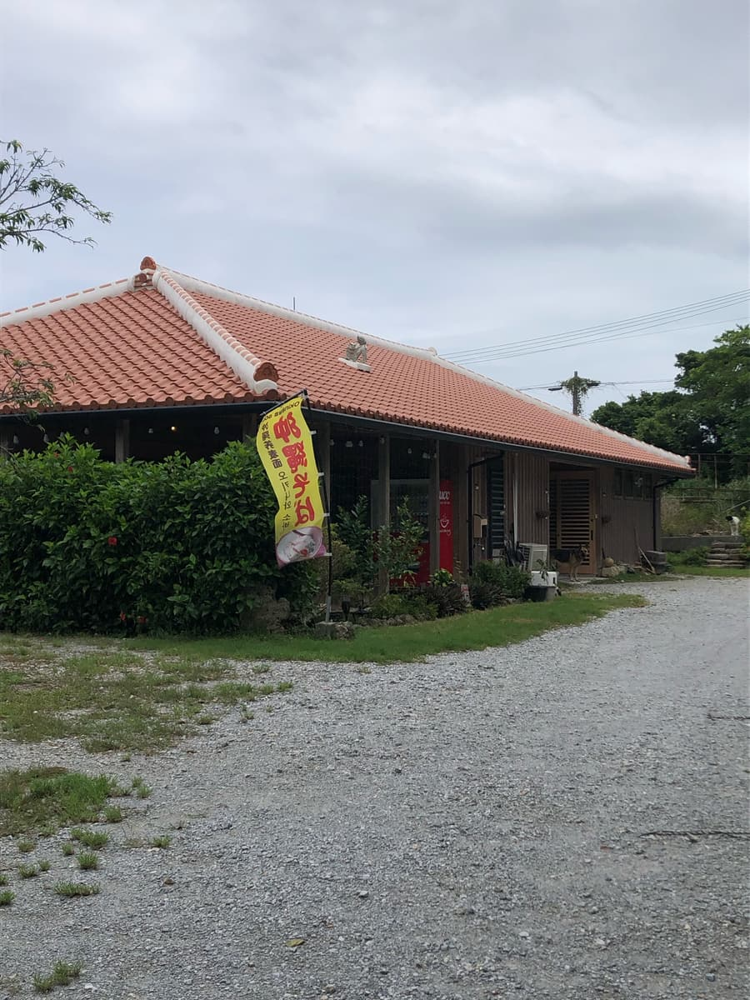
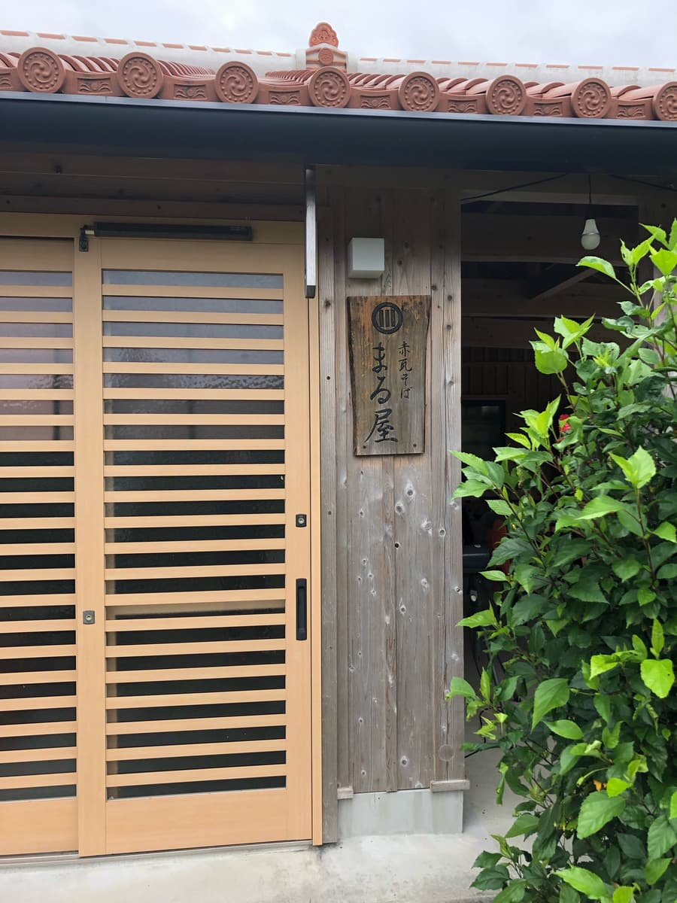
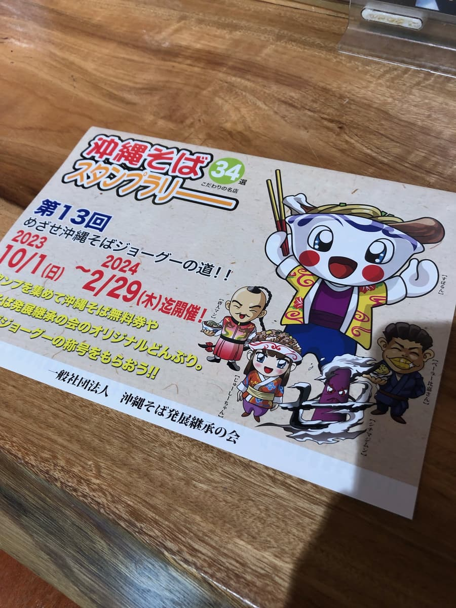
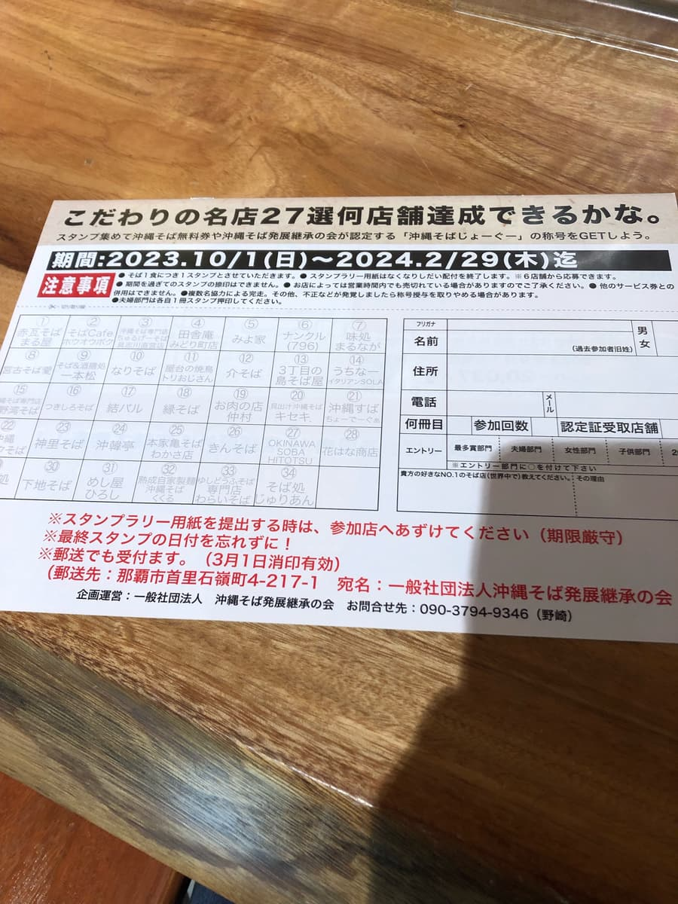
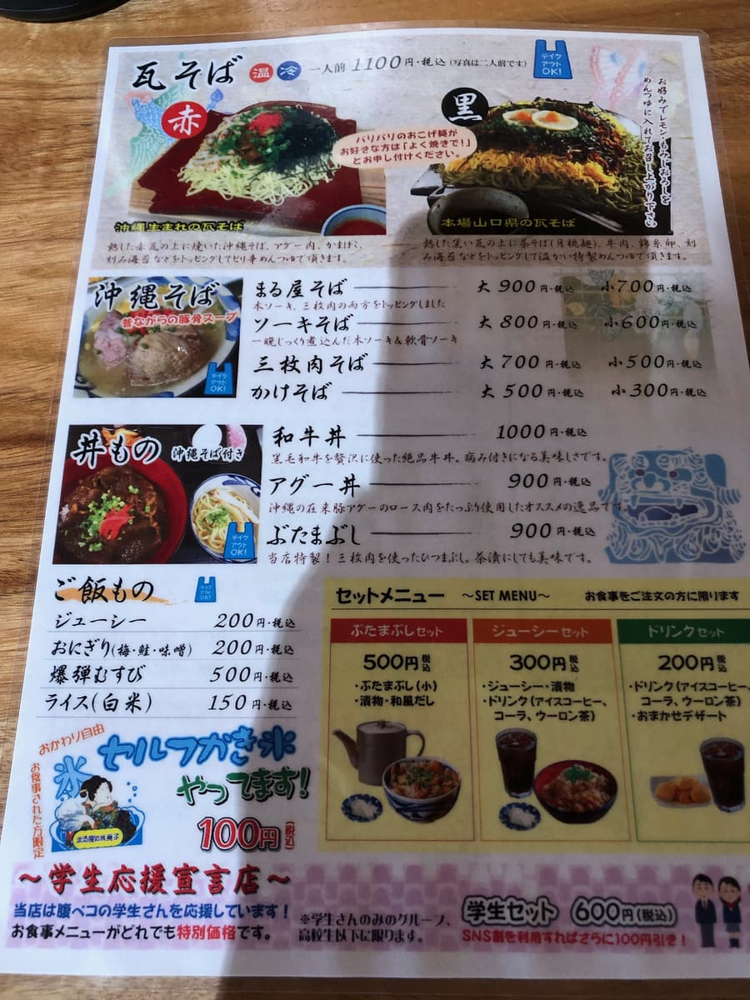
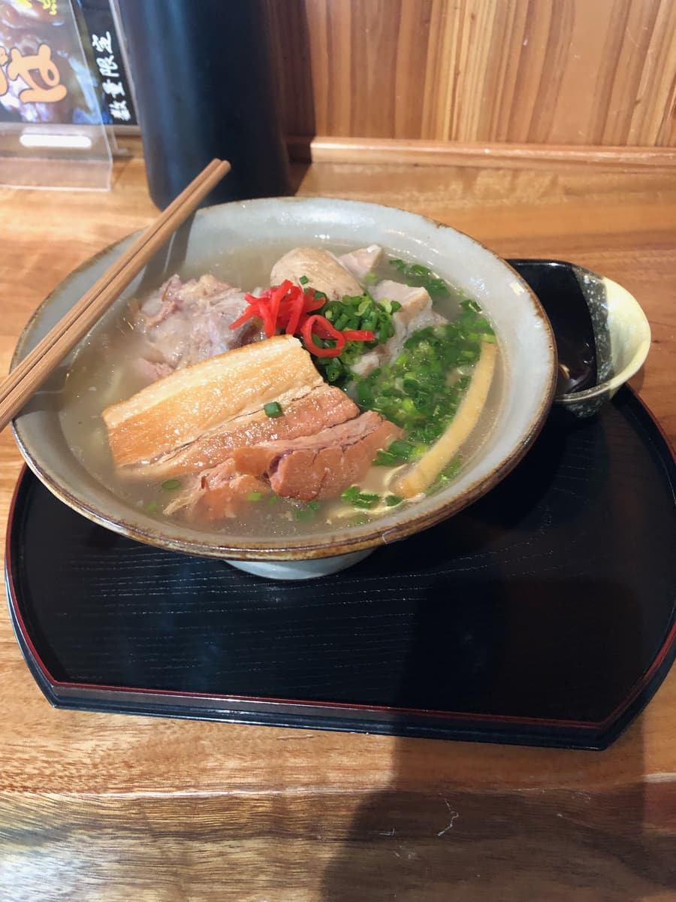
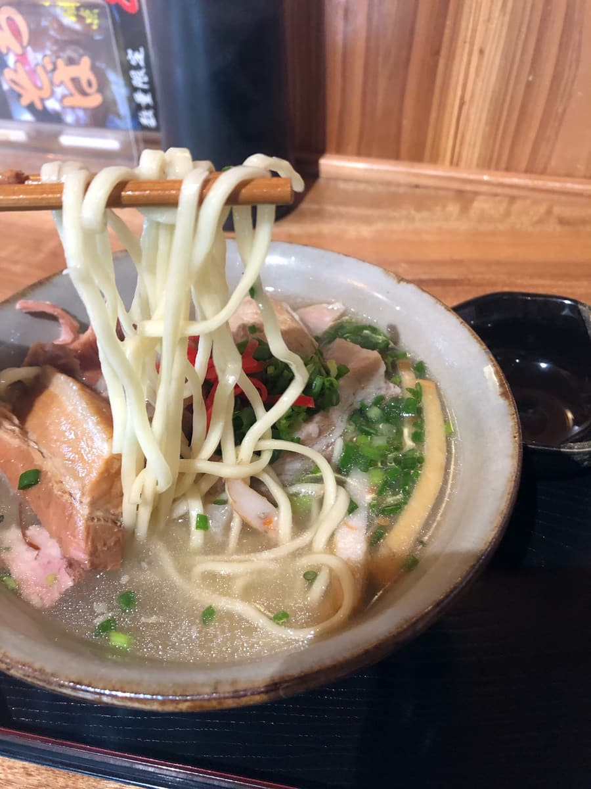
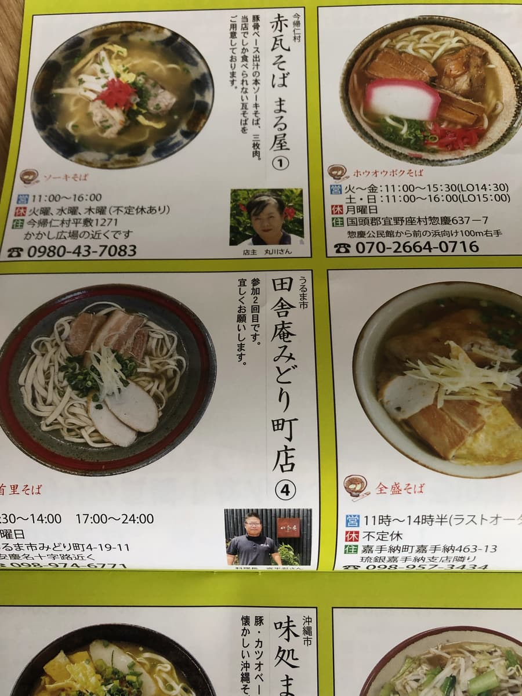
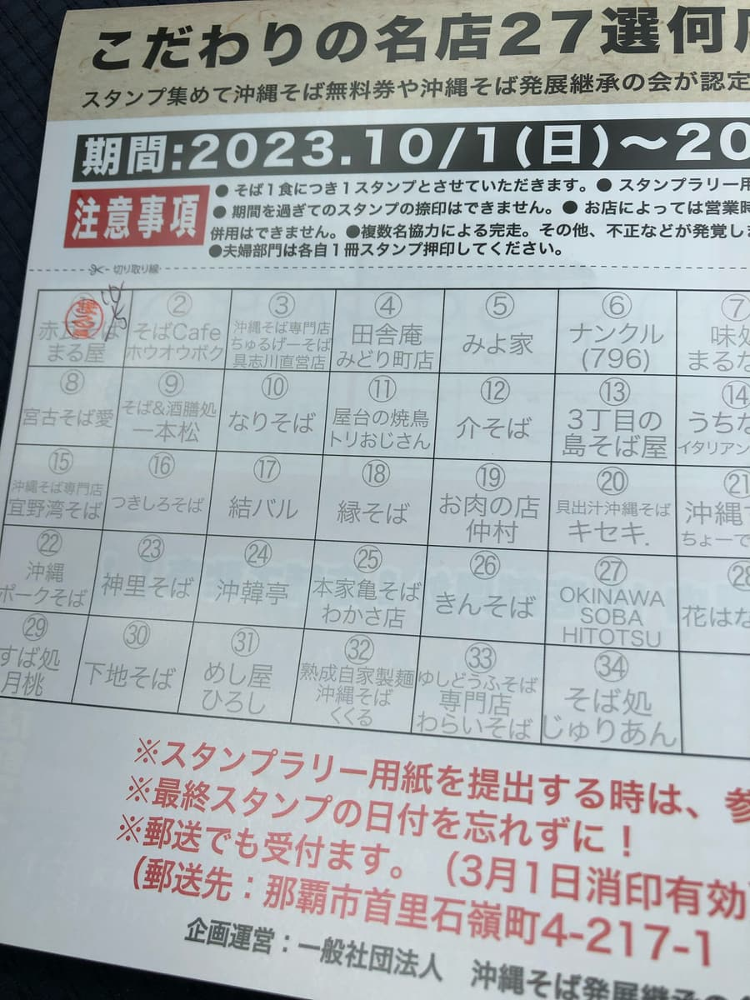

2023年10月去吃的😊 說到我是怎麼知道這家店的，是幾天前在地方報紙上得知正在舉辦2023年10月1日～2024年2月29日的「第13屆沖繩麵集章活動『通往麵食達人之路』」，知道這家店是集章活動的參加店，於是就來吃了ｗｗ


我想逛遍沖繩本島內所有的沖繩麵店，開始四處跑大概有3年左右了，卻不知道有這樣的集章活動(;^ω^) 還是一如往常天線不夠靈敏呢(;^ω^)
聽說這次的集章活動有史上最多的34家店報名。總之以在期間內全店過關為目標，首先來到了這家「赤瓦麵 丸屋」。是這次報名的店家中最北端的沖繩麵店呢😁


在菜單的沖繩麵區塊中，決定點最上面的「丸屋麵 大碗」。菜單最上面的「瓦麵」似乎是像沾麵一樣的吃法，看來是最主打的。不過我的目標是逛一般的沖繩麵，所以從沖繩麵區塊中選擇😁


照例先喝一口湯。如集章活動上的介紹，確實是豬骨為底呢😋 湯頭就是很普通的好吃。接下來吃麵。

麵條是相當偏軟的細直麵。這也是很普通的好吃。
接著吃配料。紅薑、蔥、魚板、帶骨排骨、三層肉、軟骨排骨。份量十足呢。
不過，配料雖然份量多、肉也軟，但肉的口感有不少偏筋的感覺。


評分（10分/15分）：豬骨為底的湯頭、直的細麵就是很普通的好吃😄 不過肉有偏筋的口感呢。各位也要不要參加集章活動來試試呢。
麵：★★★✬☆（3.5）
湯頭：★★★✬☆（3.5）
配料：★★★☆☆（3）